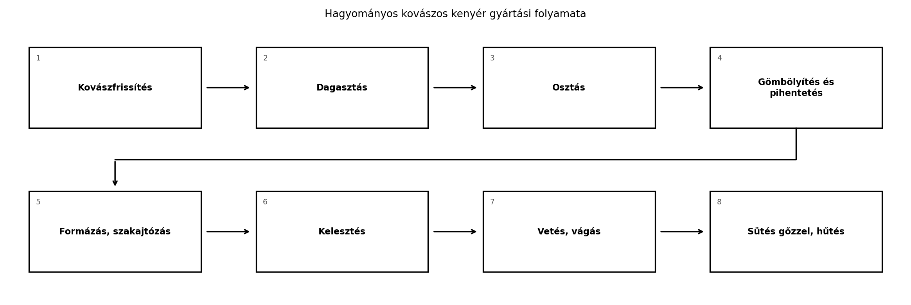

Egy vidéki pékségben a pék kétféle megrendelést kap: a helyi piacra hagyományos, kemencés, kovászos kenyeret kérnek, a biobolt pedig ellenőrzött bio lisztből sütött, magvas, hosszan érlelt cipót venne át. A csomagoláson az egyik termékre „hagyományos, HÍR”, a másikra „bio” feliratot szeretne tenni. Ebben az alfejezetben azt tanuljuk meg, mi a különbség a hagyományos, a HÍR-gyűjteményben szereplő és a bio/ökológiai termékek között, és milyen gyártási, jelölési és higiéniai követelményeket kell betartani.
A hagyományos kovászos kenyér gyártása sematikusan így mutatható be:

A hagyományos gyártásban a hangsúly nem a gyorsaságon, hanem a hosszú érlelésen, a kisebb élesztőmennyiségen, a kovásszal kialakított ízen és a kemencés sütésen van.
Definíció. Hagyományos sütőipari terméknek nevezzük azokat a termékeket, amelyeket régi, adott tájegységre vagy iparági hagyományra jellemző recepttel, nyersanyagokkal és eljárással készítenek. Ilyen lehet például a kovászra alapozott parasztkenyér, a hosszú érlelésű cipó vagy a kézi formázású kalácsfajta. A „hagyományos” szó önmagában nem feltétlenül védett jogi kategória, de a fogyasztót nem szabad megtéveszteni vele.
Definíció. A Hagyományok–Ízek–Régiók (HÍR) gyűjtemény Magyarország hagyományos és tájjellegű élelmiszereinek nyilvántartása. A HÍR nem azonos az uniós oltalommal, hanem nemzeti gyűjtemény, amelynek célja a termékek leírása, megőrzése és megismertetése.
Előírás. A HÍR-gyűjteménybe vétel és a HÍR-megjelölés feltételeit az agrártárca által működtetett rendszer szabályozza. A gyűjteményben sütőipari termékek – például tájjellegű kenyerek, kalácsok, mézeskalács-félék – is szerepelhetnek, de az aktuális lista és a használat pontos feltétele ellenőrizendő. Tilos HÍR-jelölést vagy a gyűjteményre utaló megkülönböztetést olyan terméken feltüntetni, amely nem szerepel a gyűjteményben, vagy nem felel meg a leírt termékjellemzőknek.
Definíció. Bio/ökológiai (öko) élelmiszer az ellenőrzött ökológiai gazdálkodásból származó alapanyagokból, az ökológiai feldolgozás szabályai szerint előállított termék. A sütőiparban a liszt, a magvak, a zsiradék, a cukor, a tej- és tojástermékek mezőgazdasági összetevők; ezeknek ellenőrzött bio forrásból kell származniuk.
Előírás. Az „ökológiai”, „bio”, „öko” kifejezések használatát az (EU) 2018/848 rendelet és a hazai végrehajtás szabályozza. A feldolgozott élelmiszer akkor jelölhető ökológiainak, ha a mezőgazdasági eredetű összetevők legalább 95%-a ellenőrzött ökológiai termelésből származik, és a feldolgozó is bejelentett, ellenőrzött ökológiai feldolgozó. Az EU ökológiai logó mellett az ellenőrző szervezet kódját is fel kell tüntetni (ellenőrizendő: a rendelet hatályos szövege, a jelölési és tanúsítási útmutatók). A „természetes”, „házias”, „vegyszermentes” felirat nem helyettesíti a bio tanúsítást.
Definíció. Korszerű sütőipari termékek alatt ebben az alfejezetben azokat az irányzatokat értjük, amelyek a hagyományos technológiát és a mai táplálkozási igényeket kombinálják: teljes kiőrlésű lisztek, magvak, hosszú érlelés, mérsékelt só, kisebb élesztőadag, esetenként bio alapanyag. A „korszerű” nem jogi kategória, hanem technológiai és termékfejlesztési szemlélet.
A hagyományos kovászos kenyér gyártása a kovász vezetésével kezdődik. A kovászt a teljes liszt egy részéből, vízzel és érlelt kovászmaggal készítjük. A cél nem az erőteljes élesztőgáz-képzés, hanem az íz, a tésztaszerkezet és az eltarthatóság javítása. A tésztakészítés és feldolgozás lépései:
Higiénia. A kovász és a nyers tészta nyers alapanyagnak számít; a munkafelületet, a kezet és a szakajtókat tisztán kell tartani. A kovász érlelése alatt ellenőrizzük az idegen szagot és a penészt; a penészes, idegen szagú kovászt ki kell önteni, nem kell „megmenteni”.
HACCP. A hagyományos kenyérnél a kritikus szabályozási pont elsősorban a sütési átsültség, mert a nyers tészta mikrobiológiai kockázata magas, és a sütés pusztítja el a kórokozókat. A kelesztési idő és a hőmérséklet ellenőrző pont, mert a helyes erjedés befolyásolja a termék minőségét és a sütés egyenletességét.
A teljes kiőrlésű lisztek a gabonaszem értékes rétegeit nagyobb arányban tartalmazzák. A sütőipari gyakorlatban a teljes kiőrlésű liszt több vizet vesz fel, a tészta ragadósabb, és gyakran hosszabb pihentetést igényel. Előírás. A „teljes kiőrlésű” megnevezés akkor használható, ha a gabona összetevő a teljes magból készült, és a termékben a teljes kiőrlésű liszt aránya eléri az előírt értéket (ellenőrizendő: Magyar Élelmiszerkönyv, hatósági útmutató).
A magvak – lenmag, napraforgómag, tökmag, szezámmag, diófélék – javítják az élvezeti értéket és a tápanyagtartalmat, de technológiai és biztonsági kockázatot is hordoznak. A magvakat előzetesen át kell válogatni, idegen anyagtól mentesíteni, és gyakran vízben áztatni, hogy a tésztából ne vonják el a vizet. Az áztatott magvakat hűtve kell tárolni, mert a nedves, meleg közeg kedvez a mikrobák szaporodásának.
HACCP. A magvaknál különösen fontos a beszállítói specifikáció, a penész- és szalmonella-kockázat, valamint az idegen anyag vizsgálata. Az áztatott magvak hűtési hőmérséklete és tárolási ideje a pékség HACCP-tervében rögzített tanulási példa szerint jellemzően 2–6 °C, legfeljebb 24 óra (ellenőrizendő: üzemi HACCP-terv, hatósági útmutató).
A hosszú érlelésű tésztánál kisebb élesztőadagot és nagyobb kovászhányadot használunk. A tészta 12–24 órán át, gyakran hűtve érlelődik. Ezalatt az enzimek és a kovász mikroflórája dolgozik, az íz mélyebb, a héj színe szebb, a bélzet lyukacsosabb lesz. A hosszú érlelés nem automatikusan jelent bio minőséget, és nem helyettesíti a higiéniai szabályokat.
1. példa – Hagyományos kovászos parasztkenyér napi gyártása. Egy tanpékség 5 kg lisztből dolgozik. A liszt 20%-ából kovászt készítenek: 1 kg BL 80 liszt, 1 kg víz, 0,2 kg érett kovászmag. A végtésztához 3,2 kg BL 80 lisztet, 0,8 kg rozslisztet, 2,15 kg vizet, 0,1 kg sót és 0,025 kg sajtolt élesztőt adnak. A tészta tömege 8,475 kg. A késztermék tervezett tömege 0,88 kg/db, a sütési és hűlési veszteség együtt 12%. A feladási tömeg:
A 8 darab feladási tömege 8,0 kg, a maradék tésztát próbacipónak vagy kisméretű kóstoló cipónak használják.
2. példa – Bio jelölés ellenőrzése átvételkor. A pék bio lisztet és bio napraforgómagot vesz át. Az átvételi ellenőrzés során megnézi a kísérő dokumentumokat, a tanúsítványt, a tételazonosítót és a csomagolás sértetlenségét. A bio lisztet külön, feliratozott tárolóban helyezi el, és a mérlegelő edényt a betanított munkatárs csak bio tételekhez használja. A dokumentumokat a nyomonkövethetőség miatt megőrzi. Figyelem. A bio lisztet nem szabad azonos, hagyományos liszttel összekeverni, mert akkor a tétel nem jelölhető bioként.
Előírás. Az ökológiai termelésre és jelölésre az (EU) 2018/848 rendelet vonatkozik; a feldolgozott termék mezőgazdasági összetevőinek legalább 95%-a bio kell hogy legyen, és az ellenőrző szervezet kódját, valamint a mezőgazdasági alapanyagok származási helyét (EU / nem EU) is fel kell tüntetni (ellenőrizendő: hatályos szöveg, hazai végrehajtás, ellenőrző szervezeti útmutatók).
Előírás. A HÍR-gyűjtemény használata az agrártárca által meghatározott feltételekhez kötött; sütőipari termékeknél az aktuális gyűjteményi lista és a termékleírás az irányadó (ellenőrizendő: aktuális HÍR-szabályzat).
Előírás. A teljes kiőrlésű, magvas, rostban gazdag állítások és a tápanyag-összetételre vonatkozó közlemények csak a hatályos élelmiszerjogi feltételek szerint használhatók (ellenőrizendő: 1169/2011/EU rendelet, 1924/2006/EK rendelet, Magyar Élelmiszerkönyv).
Egy kis pékség „hagyományos falusi kenyeret” hirdetett, és a csomagolásra a HÍR-re utaló feliratot tett, noha a termék nem szerepelt a gyűjteményben. A hatósági ellenőrzés hiányolta a termékleírást és a HÍR-jelölés jogosultságát. A pék a címkét módosította, a terméket egyszerűen „hagyományos eljárással készült kovászos parasztkenyérnek” nevezte, és a HÍR-megjelölést törölte. Később a receptúrát és a technológiát termékleírással kiegészítve kezdeményezte a felvételt. Továbbvitt eredmény. A hagyományos, HÍR és bio szemlélet, valamint a termékleírás igénye az A mézeskalácsos mesterség és a mézes készítmények alfejezetben a mézes készítmények hagyományos és korszerű változatainál is visszatér: a mézeskalácsnál is fontos, hogy mit nevezhetünk hagyományosnak, mikor HÍR, és milyen feltételekkel bio.
Cél: hagyományos kovászos parasztkenyér készítése 5 kg lisztből, 8 darabban, a technológiai lap szerint.
Eszközök és anyagok: dagasztógép, mérleg, kelesztő, kemence, szakajtó, pengés vágó, tészta-kimérő, kovászos edény; BL 80 liszt, rozsliszt, érlelt kovászmag, víz, só, esetleg kevés sajtolt élesztő.
Higiénia. Tiszta munkaruha, hajháló, ékszer nélkül, sebek ellátása. Kézmosás után ellenőrizzük a munkafelületet, a mérleget, a szakajtókat és a kovászedényt. Aki hasmenéssel, hányással vagy gennyes sebbel dolgozik, élelmiszerhez nem nyúlhat.
Gépbiztonság. A dagasztógépet csak betanítás után kezeljük. Üzem előtt ellenőrizzük a védőburkolatot, a reteszelést és a vészleállítót. A gépet csak leállított, áramtalanított, újraindítás ellen biztosított állapotban tisztítjuk. A kemencénél hőálló kesztyűt használunk, gőzölésnél vigyázunk a forró gőzre.
Számozott lépések:
Ellenőrzési pontok: kovász szaga, kovász emelkedése, tésztahőmérséklet, megkeltség, vágás nyílása, sütési bélhőmérséklet, késztömeg.
Dokumentálás: kovásznapló, dagasztási napló, sütési ellenőrző lap, HACCP-feljegyzés.
Termék: Hagyományos kovászos parasztkenyér
Tétel: 8 db, késztömeg 0,88–0,90 kg/db (csomagolás
nélkül, hűlés után)
| Nyersanyag | Lisztre vetített % | Mennyiség (kg) | Megjegyzés |
|---|---|---|---|
| Kovász BL 80 liszt | 20 | 1,00 | kovászhoz |
| Kovász víz | 20 | 1,00 | kovászhoz |
| Érlelt kovászmag | 4 | 0,20 | liszt-víz arány a kovásznapló szerint |
| BL 80 liszt | 64 | 3,20 | végtészta |
| Rozsliszt | 16 | 0,80 | végtészta |
| Víz | 43 | 2,15 | végtészta |
| Só | 2 | 0,10 | végtészta |
| Sajtolt élesztő | 0,5 | 0,025 | végtészta, tanulási példa |
| Tészta összesen | 169,5 | 8,475 | a lisztre vetített arányok összege |
Műveleti paraméterek: tésztakitermelés TA = (5,0 + 3,15) / 5,0 × 100 = 163. Dagasztás: lassú 3–5 perc, gyors 6–8 perc; tésztahőmérséklet 24–26 °C; pihentetés 30 perc; osztás 1,0 kg/db; gömbölyítés, majd 20–30 perc pihentetés; kelesztés 28–30 °C, 75–80% relatív páratartalom, 60–90 perc; sütés 240–250 °C gőzzel, majd 210–220 °C, 35–45 perc; bélhőmérséklet 96–98 °C. A maradék tésztából kisméretű próbacipó készíthető.
Allergén. Gluténtartalmú gabonák: búza (BL 80 liszt), rozs (rozsliszt). Tojás, tej, szezám, diófélék nem szerepelnek a receptúrában, de az üzemi keresztszennyeződés kockázatát a HACCP-terv szerint kell kezelni.
HACCP- és minőségi pontok. A sütés CCP: a bélhőmérséklet 96–98 °C legyen, a héj aranybarna, a bél rugalmas. A kelesztés ellenőrző pont: a tészta ne legyen alul- vagy túlkelt. A nyers tészta idegen anyagtól mentes legyen. A kovász savanykás, tiszta illatú, penésztől, ecetszúrós szagtól mentes legyen.
A hagyományos kovászos kenyér héja vastagabb, ropogós, színe aranybarna. A bélzet rugalmas, lyukacsos szerkezetű, kellemesen savanykás, nem nyúlós. A tömeg a késztömegnek megfeleljen. A bio terméknél a minta nemcsak érzékszervileg, hanem dokumentáltan is igazolja az összetételt: a gyártási tételben csak tanúsított bio összetevők legyenek, a jelölés tartalmazza az EU bio logót és az ellenőrző szervezet kódját (ellenőrizendő).
1. „Hagyományos” és HÍR összekeverése. A pék minden régi receptjét HÍR-ként jelöli. Ez megtévesztő, ha a termék nincs a gyűjteményben. Megelőzés: a HÍR-jelölést csak a gyűjteménybe felvett terméken alkalmazzuk, a pontos feltételekkel (ellenőrizendő).
2. Bio liszt hígítása hagyományos liszttel. A készletfogytán lévő bio lisztet kiegészítik a kamrából vett hagyományos liszttel. A termék nem lesz bio, és a jelölés szabálytalan. Megelőzés: a bio alapanyagokat elkülönítve, tételazonosítóval tároljuk, és csak bio tételhez használjuk.
3. Teljes kiőrlésű kenyér teljes kiőrlésű liszt nélkül. A termék színe barna, de csak karamell vagy maláta adja. A „teljes kiőrlésű” jelölés feltételei nem teljesülnek. Megelőzés: a teljes kiőrlésű liszt arányát a tényleges receptúra szerint állapítjuk meg, és a jelölést a hatályos előírásnak megfelelően használjuk.
4. Áztatott magvak hosszú, meleg tárolása. A magvak meglöttyednek, kellemetlen szagot kapnak, mikrobiológiai kockázatot jelentenek. Megelőzés: az áztatott magvakat hűtve, rövid ideig tároljuk, és felhasználás előtt ellenőrizzük a szagukat, állagukat.
1. feladat (A) Fogalmazd meg, mi a különbség a hagyományos sütőipari termék és a HÍR-jelöléssel ellátott termék között.
2. feladat (A) Egy bio minősítésű kenyérben a mezőgazdasági összetevők tömege 12 kg. Mennyi lehet belőle nem bio, ha az ökológiai jelölés feltétele legalább 95% bio mezőgazdasági összetevő?
3. feladat (B) A technológiai lap hagyományos parasztkenyerét 5 kg liszt helyett 12 kg liszttel kell készíteni. Mennyi legyen a kovászliszt, a kovászvíz, a végtészta BL 80 liszt, a rozsliszt, a víz, a só és az élesztő mennyisége?
4. feladat (B) A késztömeg 0,90 kg, a sütési–hűlési veszteség 13%. Mennyi a feladási tömeg? Hány kilogramm tésztát kell dagasztani 12 darabhoz?
5. feladat (C) Tervezz HACCP-ellenőrzést a hagyományos kovászos kenyér sütéséhez: nevezd meg a CCP-t, a veszélyt, a kritikus határértéket, a mérés módját és a helyesbítést. A határértéket tanulási példaként add meg.
6. feladat (D) Egy pékségben a bio magvas cipó gyártása után ugyanabban a dagasztógépben hagyományos kiflit készítenek. A dolgozó csak száraz ronggyal törölte át a gépet, mert „nem maradt benne tészta”. Milyen hibát követett el, és mi a helyes tisztítás? Milyen jelölési következménye lehet a hanyag tisztításnak?
Önellenőrzés – válaszok
1. feladat megoldása (A) A hagyományos termék lehet régi receptúrájú, de ezt a szó nem védi automatikusan. A HÍR-jelöléshez a terméknek az aktuális HÍR-gyűjteményben kell szerepelnie, és a termékleírásnak meg kell felelnie. A HÍR tehát ellenőrzött, nyilvántartott minősítés, míg a „hagyományos” leíró, könnyen megtévesztően használható kifejezés.
2. feladat megoldása (A) A nem bio mezőgazdasági
összetevő legfeljebb 5%.
.
Azaz legfeljebb 0,6 kg lehet nem bio, a többi 11,4 kg bio.
3. feladat megoldása (B) A lisztre vetített
százalékok az új lisztmennyiséggel szorozva:
kovászliszt 20% → 2,40 kg; kovászvíz 20% → 2,40 kg; érlelt kovászmag 4%
→ 0,48 kg; BL 80 liszt 64% → 7,68 kg; rozsliszt 16% → 1,92 kg; víz 43% →
5,16 kg; só 2% → 0,24 kg; élesztő 0,5% → 0,060 kg.
A tészta tömege 12 kg liszttel 12 × 1,695 = 20,34 kg.
4. feladat megoldása (B)
.
12 darabhoz:
tészta szükséges. A dagasztásnál célszerű némi tésztatartalékkal
tervezni.
5. feladat megoldása (C) HACCP-táblázat
tanulási példaként:
CCP: sütés. Veszély: a nyers tésztában túlélő kórokozók. Kritikus határ:
bélhőmérséklet legalább 96 °C, a sütő hőmérséklete 240–250 °C-ról indul,
sütési idő 35–45 perc. Monitoring: bélhőmérséklet mérése minden
tételből, idő mérése. Helyesbítés: a nem átsült terméket külön tételként
vissza kell sütni vagy selejtezni, és a sütőt, vetési mennyiséget
ellenőrizni. Fontos: a határértékek tanulási példák, a
pékség HACCP-terve és a hatósági útmutató alapján erősítendők meg.
6. feladat megoldása (D) A dolgozó hibája, hogy a bio tétel után nem végzett teljes tisztítást és fertőtlenítést. A száraz áttörlés nem távolítja el a bio magvas tészta maradékát és a zsíros, fehérje- vagy magmaradványokat sem. Ha a magvas cipó szezámot vagy diót tartalmazott, a kifli allergénnel szennyeződhet, amit a címke nem jelöl – ez fogyasztói egészségkockázat és jelölési jogsértés. A bio szempontból a fordított irány a kritikus: a hagyományos tétel maradéka a bio termékbe kerülhet, ezért bio gyártás előtt kell a gépet a hagyományos maradéktól megtisztítani. A helyes tisztítás: leállított, áramtalanított gép, durva szennyezés eltávolítása, élelmiszeripari tisztítószeres mosás, öblítés, fertőtlenítés, száradás, majd ellenőrzés. A tisztítást dokumentálni kell.
A hagyományos sütőipari termékek régi receptek és eljárások alapján készülnek, de a „hagyományos” szó nem védett jogi kategória. A HÍR-gyűjtemény nemzeti nyilvántartás, és a HÍR-jelölést csak a gyűjteménybe felvett terméken, az aktuális feltételek szerint lehet használni (ellenőrizendő). A bio/ökológiai termékek ellenőrzött ökológiai termelésből származnak; a feldolgozott terméknél a mezőgazdasági összetevők legalább 95%-a bio, és a jelölés az (EU) 2018/848 rendelet szerint történik. A korszerű sütőipari termékek gyakran teljes kiőrlésű lisztből, magvakkal, hosszú érleléssel készülnek, de a jelöléshez pontosan be kell tartani a teljes kiőrlésű állítás és az allergénkezelés szabályait. Továbbvitt eredmény: a hagyományos, HÍR és bio követelmények, a termékleírás és a dokumentáció szemlélete az A mézeskalácsos mesterség és a mézes készítmények alfejezetben a mézes készítményeknél is alkalmazandó.